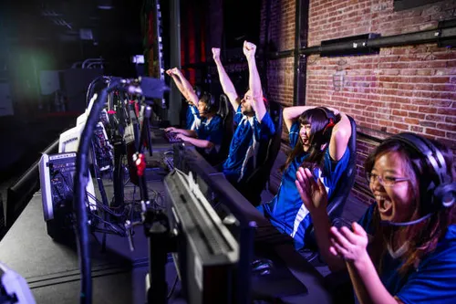

#WeAreKOA
Juega. Compite. Pertenece
KOA eSports son momentos de conexión. Te conecta con el juego, la competencia, la estrategia y, sobre todo, con una comunidad.

Nosotros
¿A qué se dedica KOA?
Nace del deseo de pertenencia absoluta y de la tarde de videojuegos con amigos donde nadie se queda fuera.
KOA es una plataforma enfocada en el desarrollo de comunidades a través de experiencias deportivas, eSports y Wellness, diseñadas para impulsar el crecimiento personal, fortalecer la conexión social y generar impacto cultural en nuevas generaciones.
- Competitivo Competimos para mejorar, no solo para ganar.
- Comunidad La comunidad es nuestro motor.
- Crecimiento En KOA creces como jugador y como persona.
Torneos
Torneos KOA
Sigue los torneos en vivo, con inscripciones abiertas y próximos de KOA.
Cargando torneos…
No pudimos cargar los torneos. Inténtalo de nuevo más tarde.
Sin torneos para mostrar por ahora.
Jugadores
Roster KOA
¿Por qué KOA es buena organización?
Gamers
En KOA compites en serio: nuestros torneos están rankeados en SuperMajor y suman puntos para el Top de México.
Aquí encuentras competencia real, mejora continua y una manada que te respalda.
Y lo hacemos accesible: tu entrada incluye alimentos y tiene un precio pensado para que todos puedan jugar.
Llegas a jugar y te quedas por la gente.
Familias
Para muchas familias, KOA es el lugar donde sus hijos encontraron pertenencia.
Los padres nos cuentan que sus hijos llegan a un espacio seguro donde aprenden a manejar la frustración, hacen amigos de verdad, recuperan las ganas y vuelven a sonreír.
Comunidad
Rompemos el estereotipo del gamer aislado.
Creamos un espacio donde nadie se queda fuera, con retas, torneos y convivencia, como esa tarde de videojuegos con amigos que invita a todo el salón.
Sponsors y marcas
Ofrecemos acceso a Gen Z y Alpha (14 a 25 años) en un entorno de alta lealtad, con interacción real y no solo visibilidad.
La comunidad es auténtica y emocionalmente comprometida, y asociarte con KOA significa vincular tu marca a un propósito claro: conexión y crecimiento personal.
Aliados
KOA suma. Somos un ecosistema (Sports, eSports y Wellness) que abre puertas a colaboraciones con impacto cultural y social donde cada aliado crece junto a una comunidad que se multiplica.
Cuando la gente se une, todos ganan.
Nuestra historia
Aquí, la pantalla no los aísla, los une.
KOA nace para convertir el juego en un punto de encuentro. Encontramos en el control y en la estrategia el puente para conectar, crear lazos inquebrantables, compartir una pizza, reír en comunidad e invitar orgánicamente a todo el salón a casa.
Juega. Compite. Pertenece
Aquí tu pasión deja de ser pasatiempo y se vuelve una herramienta de evolución.
Únete a la comunidadContacto
KOA es TU casa
Cuando la gente se une, todos ganan.